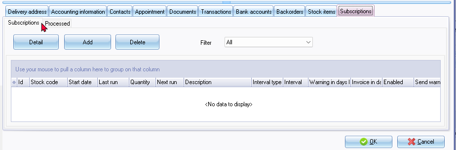
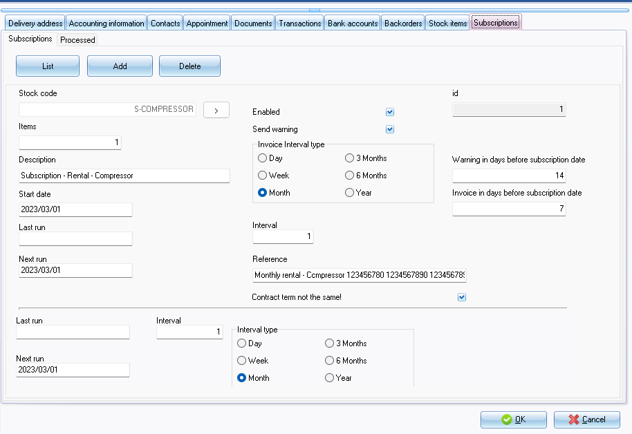
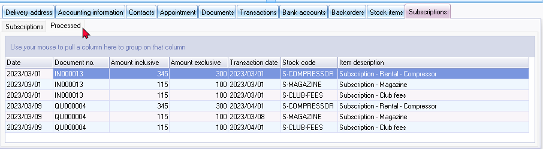

Setup subscriptions
Setup subscriptions
Once Subscriptions have been activated, the Subscriptions screen will be displayed when you open the Set of Books, if any subscriptions need processing.
To add the subscriptions, you need to do the following:
- Create Stock items for Subscriptions (if these do not already exist).
- Add subscriptions to Debtors (customer) accounts.
Once this is done, you may proceed to process subscriptions.
Add Stock items for subscriptions
You may need to add groups for your subscriptions. This will allow you to assign your stock items (products) to specific stock groups.
To add Subscriptions for Stock items (products):
- On the Default ribbon, select Stock items.
- Select a specific Stock item (product) account on the list. You may click on the New button to create a new item or copy an existing stock item.
- Click on the Edit button. (Alternatively, you may double-click on the selected stock item (product).
Add subscriptions to debtors (customers)
To add Subscriptions for debtors (customers):
- On the Default ribbon, select Debtor.
- Select a specific Debtor (customer) account on the list.
- Click on the Edit button. (Alternatively, you may double-click on the selected debtor (customer / client) account).
- Click on the Subscriptions tab. Initially the Subscriptions tab will be empty for a debtor account, if no subscriptions were added.

- Click on the Add button.

The default term as set when activating the Subscriptions plugin will be displayed. You may change this for each subscription.
- Select and or enter the following options:
- Stock code - Click on the lookup > button and select the stock item (product).
- Enabled - This will activate or deactivate the Subscription of this product for this debtor. If the tick is removed from this field, no further subscriptions will be processed.
- Send warning - Uncheck "Warning send" ensures that you check .....
- Status - This will indicate the status of the plugin (i.e. None, running or E-mailed).
- id - The id is the subscription record id. It will automatically be generated when the added subscription is saved.
- Interval - The "interval" field determines how often subscriptions should be processed. During the chosen period invoiced The "Warning in days for subscription"
- Warning in days before subscription date - Enter the number of days before or after the "next process" in which the first warning message is shown in the popup plugins.
- Invoice in days before subscription date - Enter the number of days before or after the "next process" in which the billing message is shown in the popup plugins.
- Interval type – Select the frequency when the subscription is due (i.e. Day, Week, Month, 3 Months, 6 Months or Year).
- Description – The description of the selected stock item will be displayed. You may add to the existing stock description or overtype the description, if necessary. This will be displayed in the invoices / quotes.
- Start date - The default date is today, but can be adjusted if desired. This is the date from which the subscription or contract starts. The Last run and Next run fields will automatically be updated. This is the date from the start date plus the number of days entered in the Invoice in days before subscription date field. If the subscription has already been billed, you will see the last billing date in the Next run field. With the "number" field.
The Period indicating the last run to next run, for example, "Period 2023/05/01/2023/05/31" would be generated as comments when processing documents for the subscriptions plugin and will print on document layout files.
- Items – The number of stock items for the debtor that is included and processed for this subscription. You may enter the number (quantity) subscription products.
- Reference – Enter the reference text which is used on the invoice / quote. In this field, we can also use data fields. This reference will be displayed on the “Your reference” field on invoices / quotes.
- Contract term not the same – This field allows you to set the 2nd set of settings for a period contracts. If selected (ticked), it will add the Interval and Interval type options (fields) at the bottom (underneath the "Reference" field) of the Subscriptions tab. You may set the options if the field differs from the main subscription.
- Click on the List button to save the subscription.
- Click on the Save button on the Edit Debtor screen to save your changes.
- Select the next debtor (customer / client) account, if necessary.
Delete subscriptions
To permanently remove an existing subscription, you may click on the Delete button.
It is important to ensure that you can set a subscription to disabled by removing the tick in the Enabled field.
If the subscription needs to be activated at a later point in time be enabled again, you may tick the Enabled field.
View processed transactions
Once subscriptions have been processed, an extra Processed tab will be added. If you click on the Processed tab, the quotes and invoices will be listed.

You may double-click on a quote or an invoice to print the document.